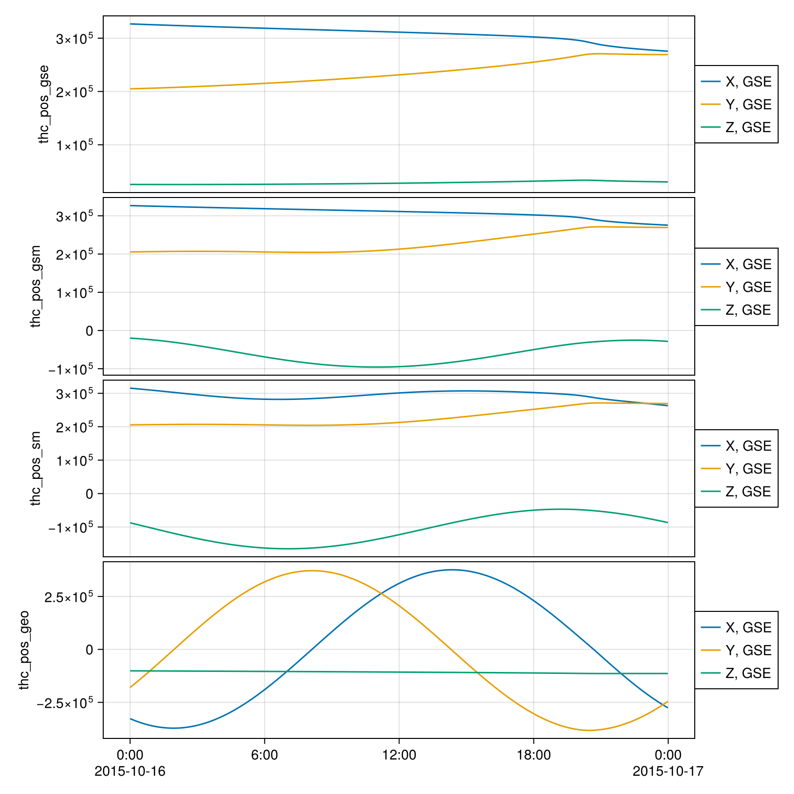

Coordinate Systems and Transformations
This package defines common coordinate systems used in heliophysics and space physics research.
Standard Coordinate Systems
Systems based on the Earth-Sun line
- GSE (Geocentric Solar Ecliptic)
- GSM (Geocentric Solar Magnetic)
Systems based on the Earth's rotation axis
- GEO (Geographic)
- GEI (Geocentric Equatorial Inertial)
- J2000
Systems based on the dipole axis of the Earth's magnetic field
- SM (Solar Magnetic)
- MAG (Geomagnetic)
Other coordinate systems
More information can be found in the the following links
Coordinate Transformations
A comprehensive description of the transformations can be found in Hapgood [1]
Coordinate transformations between geocentric systems
SPEDAS.cotrans — Function
cotrans(out, A, [times]; in=get_coord(A))
cotrans(in => out, A, [times])Transform data to the out coordinate system with GeoCotrans and update its coordinate metadata (setcoord), e.g. cotrans(GSM, A).
References:
using DimensionalData
using Speasy, SPEDAS
using CairoMakie, SpacePhysicsMakie
pos_gse = get_data("cda/THC_L1_STATE/thc_pos_gse", "2015-10-16", "2015-10-17") |> DimArray
pos_gsm = cotrans(GSM, pos_gse)
pos_sm = cotrans(SM, pos_gsm)
pos_geo = cotrans(GEO, pos_gsm)
tplot((pos_gse, pos_gsm, pos_sm, pos_geo))
Specialized Coordinate Systems
The package also provides transformations for analysis-specific coordinate systems:
Minimum Variance Analysis (MVA) and Boundary Normal Coordinates (LMN)
A coordinate system derived from the eigenvalues and eigenvectors of the magnetic field variance matrix, commonly used in analyzing current sheets, discontinuities, and wave propagation.
mva_eigen, mva and related functions come from MinimumVarianceAnalysis.jl, re-exported by SPEDAS; see its documentation for the API and the comparison with PySPEDAS.
Reference
- PySPEDAS: Coordinate Systems
- geopack: Python version of geopack and Tsyganenko models
- geospacelab: A python-based library to collect, manage, and visualize geospace data (e.g. OMNI, geomagnetic indices, EISCAT, DMSP, SWARM, TEC, AMPERE, etc.).
- aacgmv2: Python library for AACGM-v2 magnetic coordinates